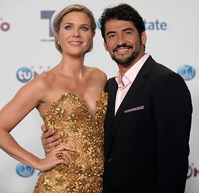
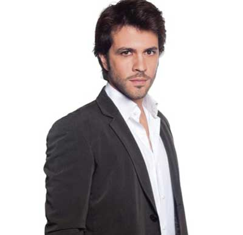

CHISMES DE GARÚ
Esta sección es autoría de Gustavo Rincón

La viuda es...
En RTI se decidieron, después de ver muchos perfiles y de escuchar muchos rumores sobre la protagonista de ‘Viuda negra’, escogieron a la actriz mexicana Ana Serradilla. Ella había prometido no volver a actuar en novelas, pero quedó tan descrestada con el proyecto que ya está radicada en Bogotá y lista para empezar. Escogida la protagonista ahora se agarran de los pelos buscando el antagonista.
En RTI se decidieron, después de ver muchos perfiles y de escuchar muchos rumores sobre la protagonista de ‘Viuda negra’, escogieron a la actriz mexicana Ana Serradilla. Ella había prometido no volver a actuar en novelas, pero quedó tan descrestada con el proyecto que ya está radicada en Bogotá y lista para empezar. Escogida la protagonista ahora se agarran de los pelos buscando el antagonista.

Famosos a la defensa
Tras la denuncia que se presentó en el programa ‘El Lavadero’ donde acusaban al reconocido fotógrafo Fernando Rivera de cobrar para no publicar ciertas fotos; los famosos han salido en su defensa y han demostrado su apoyo por redes sociales afirmando que no es así. El también director de videos musicales tomó acciones legales en contra de quienes lo acusan. Yo también me uno y estoy a su favor
Tras la denuncia que se presentó en el programa ‘El Lavadero’ donde acusaban al reconocido fotógrafo Fernando Rivera de cobrar para no publicar ciertas fotos; los famosos han salido en su defensa y han demostrado su apoyo por redes sociales afirmando que no es así. El también director de videos musicales tomó acciones legales en contra de quienes lo acusan. Yo también me uno y estoy a su favor

Por amor a Ana
Uno de los matrimonios más comentados en México fue el de Ninel Conde y el empresario Juan Cepeda, pero más comentado ha sido su divorcio pues la cantante ha desatado un escándalo donde afirma que él le da malos manejos a su dinero. Pero ahora la atención de la prensa rosa esta en el empresario, quien dejó a una de las mujeres más bellas de México por la ex protagonista de novela Ana Rivera, de quien dice esta muy enamorado.
Uno de los matrimonios más comentados en México fue el de Ninel Conde y el empresario Juan Cepeda, pero más comentado ha sido su divorcio pues la cantante ha desatado un escándalo donde afirma que él le da malos manejos a su dinero. Pero ahora la atención de la prensa rosa esta en el empresario, quien dejó a una de las mujeres más bellas de México por la ex protagonista de novela Ana Rivera, de quien dice esta muy enamorado.

Ronald social
El presentador de ‘La Red’ Roland Mayorga anda llamando a todos sus amigos para que se solidaricen con su causa. El valluno está dispuesto a ayudar a Yumbo y su población más vulnerable. La idea del chismoso de la televisión es reunir empresarios y gente de buen corazón para hacer entrega de casas, canchas de fútbol y mercados con un gran concierto donde están confirmados Kofla, Siam, Pasabordo, Lamar y Shaira.
El presentador de ‘La Red’ Roland Mayorga anda llamando a todos sus amigos para que se solidaricen con su causa. El valluno está dispuesto a ayudar a Yumbo y su población más vulnerable. La idea del chismoso de la televisión es reunir empresarios y gente de buen corazón para hacer entrega de casas, canchas de fútbol y mercados con un gran concierto donde están confirmados Kofla, Siam, Pasabordo, Lamar y Shaira.

Paola ahora en Fox
La que anda feliz es la presentadora Paola García, resulta que tras radicarse en Bueno Aires para adelantar sus estudios en diseño de interiores, le apareció la oportunidad de la vida. Pues fue convocada para presentar el nuevo programa ‘De Gira’ de la cadena deportiva FOX. La cucuteña tiene encantados a todos con sus curvas y claro, con su talento.
La que anda feliz es la presentadora Paola García, resulta que tras radicarse en Bueno Aires para adelantar sus estudios en diseño de interiores, le apareció la oportunidad de la vida. Pues fue convocada para presentar el nuevo programa ‘De Gira’ de la cadena deportiva FOX. La cucuteña tiene encantados a todos con sus curvas y claro, con su talento.

Marcia es la barbie
Otra que también está saltando de la dicha es la ex señorita Córdoba Marcia Jones, resulta que ella dijo “quiero nuevos aires” y se fue con todos sus corotos para Miami. Su belleza no pasó desapercibida y cuando la vieron los productores de Telemundo, quedaron encantados y le dieron el personaje de “La Barbie” en la novela ‘Dama y obrero’, donde por supuesto ya está robando el show. ¡Qué bueno por la Jones!
Otra que también está saltando de la dicha es la ex señorita Córdoba Marcia Jones, resulta que ella dijo “quiero nuevos aires” y se fue con todos sus corotos para Miami. Su belleza no pasó desapercibida y cuando la vieron los productores de Telemundo, quedaron encantados y le dieron el personaje de “La Barbie” en la novela ‘Dama y obrero’, donde por supuesto ya está robando el show. ¡Qué bueno por la Jones!
Más juntos que nunca
Aunque todos los rumores indicaban que la relación entre Karina Cruz y Luis Miguel Cotes, gobernador del Magdalena, había terminado, les cuento que es todo lo contrario pues la pareja esta más unida que nunca y que a pesar de las ocupaciones de él, los constantes viajes de la actriz a México, el par de tortolitos no pierden oportunidad para verse donde ella de paso cumple con sus funciones de primera dama asistiendo a algunos eventos benéficos. Rumores de boda rondan por ahí.
Aunque todos los rumores indicaban que la relación entre Karina Cruz y Luis Miguel Cotes, gobernador del Magdalena, había terminado, les cuento que es todo lo contrario pues la pareja esta más unida que nunca y que a pesar de las ocupaciones de él, los constantes viajes de la actriz a México, el par de tortolitos no pierden oportunidad para verse donde ella de paso cumple con sus funciones de primera dama asistiendo a algunos eventos benéficos. Rumores de boda rondan por ahí.
A rey muerto...
Cuanta bulla y escándalo hizo la prensa latina de la “Cara sucia” Sonya Smith sobre su divorcio del también actor Gabriel Porras. Y es que lloró, lloró y pataleó diciendo que la distancia había acabado con su relación, pues ellos vivían en Miami y él tuvo que trasladarse a México para grabar ‘El señor de los cielos’. No han pasado ni dos meses del publicitado divorcio y la actriz ya anda ennoviada de Roberto Andrade, su compañero en la telenovela ‘Marido en alquiler’ donde ella trabaja.
Cuanta bulla y escándalo hizo la prensa latina de la “Cara sucia” Sonya Smith sobre su divorcio del también actor Gabriel Porras. Y es que lloró, lloró y pataleó diciendo que la distancia había acabado con su relación, pues ellos vivían en Miami y él tuvo que trasladarse a México para grabar ‘El señor de los cielos’. No han pasado ni dos meses del publicitado divorcio y la actriz ya anda ennoviada de Roberto Andrade, su compañero en la telenovela ‘Marido en alquiler’ donde ella trabaja.
Por fin
La ecuatoriana Erika Vélez está saltando en una pata, uno de sus sueños profesionales era entrar en una producción del Canal Caracol. Estuvo a punto de entrar al elenco de ‘Rafael Orozco: El ídolo’ y también a ‘Hilos de amor’ y por fin se le hizo el milagrito. Ahora hace parte de la versión colombiana de la serie ‘Nip tuck’ llamada ‘Mentiras verdaderas’ donde encarnará a la enfermera de confianza de los cirujanos.
La ecuatoriana Erika Vélez está saltando en una pata, uno de sus sueños profesionales era entrar en una producción del Canal Caracol. Estuvo a punto de entrar al elenco de ‘Rafael Orozco: El ídolo’ y también a ‘Hilos de amor’ y por fin se le hizo el milagrito. Ahora hace parte de la versión colombiana de la serie ‘Nip tuck’ llamada ‘Mentiras verdaderas’ donde encarnará a la enfermera de confianza de los cirujanos.
Adios Sweet
Con mucha tristeza debo contarles que Colombiana de Televisión decidió darle fin a su programa insignia Sweet: “El dulce sabor del chisme”. El popular magazine presentado y dirigido por Carlos Giraldo llega a su fin, luego de 14 años al aire y de contar muchas bombas del entretenimiento nacional. No sobrevivió ante sus grandes competencias. Es una gran pérdida para todos los que hacemos entretenimiento en el país, además varios colegas quedaron desempleados. Sweet nos deja muchos recuerdos y buenos momentos.
Con mucha tristeza debo contarles que Colombiana de Televisión decidió darle fin a su programa insignia Sweet: “El dulce sabor del chisme”. El popular magazine presentado y dirigido por Carlos Giraldo llega a su fin, luego de 14 años al aire y de contar muchas bombas del entretenimiento nacional. No sobrevivió ante sus grandes competencias. Es una gran pérdida para todos los que hacemos entretenimiento en el país, además varios colegas quedaron desempleados. Sweet nos deja muchos recuerdos y buenos momentos.
Malos días
El que estuvo muy ocupado en el mes de agosto fue el actor Roberto Cano quien estuvo trabajando en el rodaje de la película ‘Malos días’ dirigida por el director caleño Andrés Beltrán, esta producción cuenta también con la participación de Cristóbal Errázuris y Gloria Montoya. Prepárense para sus “malos días”.
El que estuvo muy ocupado en el mes de agosto fue el actor Roberto Cano quien estuvo trabajando en el rodaje de la película ‘Malos días’ dirigida por el director caleño Andrés Beltrán, esta producción cuenta también con la participación de Cristóbal Errázuris y Gloria Montoya. Prepárense para sus “malos días”.